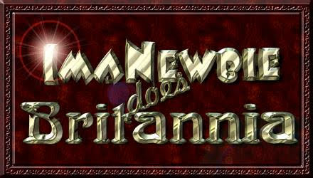
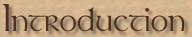

Hail and Well Met! Welcome to the ImaNewbie does Britannia, Collector's Edition.
Just by way of a little history, ImaNewbie was not my first foray into the world of online comics. It all started with the first multiplayer online game to gain a large following, i.e. Diablo, and a site I created called Tryon's Diablo Cartoon Page. I had been creating little weekly one frame cartoons about Diablo for a little over a year and then, one day I heard of this new Massively Multiplayer Online Game called Ultima Online that was sweeping the net. At first I was skeptical, I mean sheesh, PAYING a monthly fee to play a computer game? Surely this would never catch on. But then, as more and more of my old Diablo friends went over to UO and began sending glowing reports, I decided to take the plunge. The rest is history.
I never would have guessed when I sat down at the computer and created that first little two frame comic, that three years later I would still be chronicling the adventures of ImaNewbie. In that time ImaNewbie has become somewhat of a legendary character in Ultima Online, probably nearly as well known as Lord British himself. Over the last few years, thousands upon thousands of people (from over 95 countries that I have managed to identify), have stopped in at my web site to spend some time with Ima and his crew. This anthology is my way of saying thanks to all the loyal fans who have stayed with Ima through thick and thin, followed his adventures, emailed me with suggestions and compliments, spoken with me in-game, and generally given me the encouragement and drive to continue the series.
In addition to the 'toons, I have also included character bios of all the major characters who have appeared in the comics along with significant events in their lives. I have added notes and indexes on the major themes and controversies and where they appear in the various toons. I have also included the entire 18 Britannia Enquirer editions done to date. The Britannia Enquirer was an extra feature I launched when I discovered that there were some issues happening in-game that I thought would be better handled using the "tabloid" newspaper format rather than the standard 'toons. And lastly, I have included the Dictionary of UO/ICQ speak from my web site ... a quick guide to some of the strange and colorful language and abbreviations that have become a trademark of online communications, especially in online gaming.
So here without further ado, I humbly present the life and times of ImaNewbie…Enjoy!
later…Tryon